平台总控智能体
承接普通平台对话并分派任务。只能调用“已启用、允许协同、并明确开放给总控”的智能体。
从模型凭证、智能体创建、能力分配，到项目初始化、平台职责和审计，一份手册走完整个管理流程。无需提前理解 MCP、ReAct 或权限模型。
Quick start
首次配置可按以下 5 步完成基础验证。模型凭证是创建可用智能体前必须完成的基础配置。
建议创建一个暂不发布的测试智能体，首次仅分配一项能力。会话验证成功后再逐项增加能力，便于准确定位配置问题。
Workspace
日常管理主要在对话工作台完成，操作结构为“左侧选择对象、中间测试会话、右侧配置能力”。
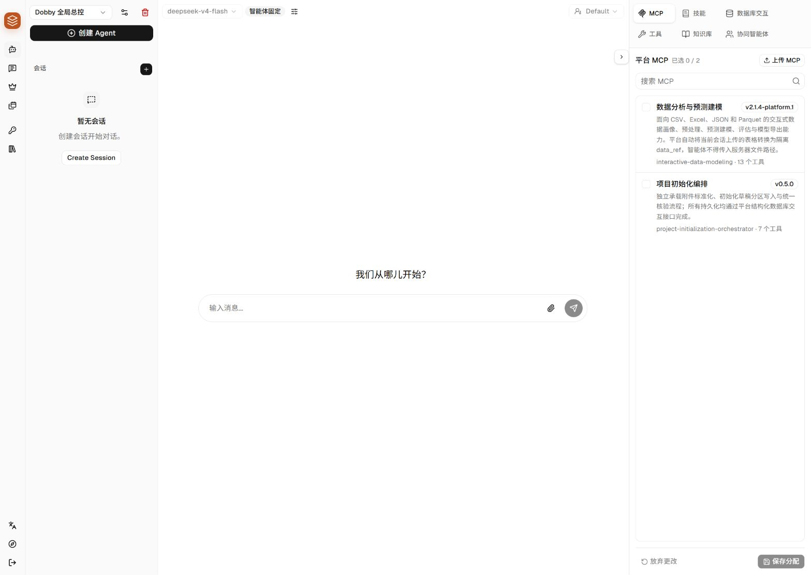
将鼠标悬停在右侧标签上可查看用途说明；左下角“指南/罗盘”按钮可以重新启动内置新手引导。
Roles
智能体的可见范围由名称、平台角色、发布状态和协同设置共同决定。
承接普通平台对话并分派任务。只能调用“已启用、允许协同、并明确开放给总控”的智能体。
工程配置页的固定入口，负责读取项目资料、制定计划、组织专项智能体并形成待核对草稿。
面向具体业务任务。只有“已启用 + 已发布”的业务智能体才会进入业务端目录。
被其他智能体邀请处理专项任务。必须开启“允许被邀请”，并填写清晰的邀请说明。
不直接出现在业务端，只作为平台职责或内部协同成员使用，适合专业解析、核验、分析等能力。
不参与业务会话，仅审核 Auto 权限模式下“需要确认”的操作；拒绝和危险操作不会被绕过。
Step 1
没有可用凭证和模型，智能体无法开始对话。入口位于左侧钥匙图标“凭证”。
选择与服务兼容的凭证类型。自定义服务通常选择 OpenAI 兼容方式。
填写名称、API Key 和 Base URL。名称应准确体现用途，例如“生产模型”或“测试模型”，避免使用“key1”等无法识别用途的名称。
优先使用“自动获取”；服务不支持时再“手动添加”。至少配置一个对话模型，之后才可在智能体中固定使用。
保存前先测试模型。若启用 Auto 权限模式，再为系统权限审核员绑定独立审核模型。
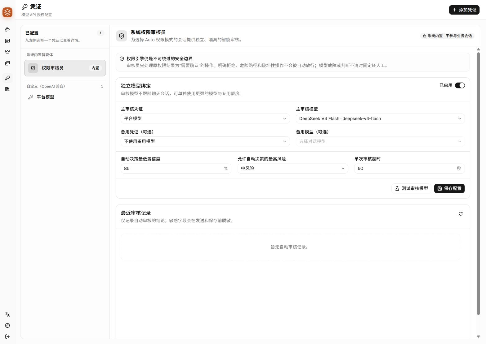
界面会脱敏显示密钥。完整密钥不得写入智能体提示词、截图、日志或会话消息，只能保存在凭证配置中。
Step 2
在对话页左侧点击“创建 Agent”。左侧目录用于快速切换配置分区；首次创建应先完成身份、模型和平台接入配置。
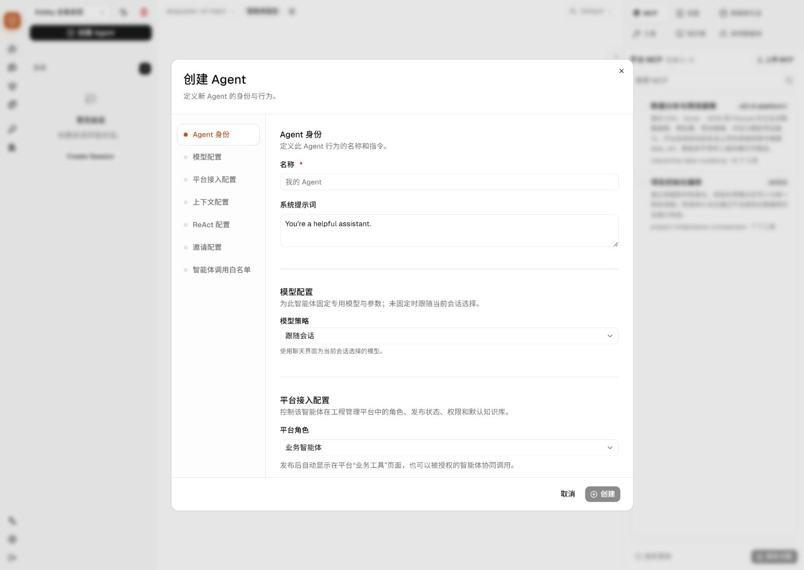
| 配置分区 | 功能说明 | 首次配置建议 |
|---|---|---|
| Agent 身份 | 名称用于列表展示；系统提示词定义职责和边界。 | 名称写业务用途；提示词写清“目标、输入、输出、禁止事项”。 |
| 模型配置 | “跟随会话”允许每次选择模型；“固定模型”保证稳定。 | 业务和平台职责智能体优先固定已验证模型。 |
| 平台接入配置 | 决定是否运行、发布、被总控调用和在业务端的排序。 | 先启用但不发布；验证通过后再发布。需要业务端展示时填写清晰说明和分类。 |
| 上下文配置 | 控制长会话压缩、保留比例和工具结果截断。 | 保持默认。只有确认上下文过长或关键信息丢失时再调整。 |
| ReAct 配置 | 控制一次任务最多循环多少轮，以及拒绝和中断行为。 | 保持默认。复杂任务失败且日志显示迭代耗尽时再增加。 |
| 邀请配置 | 开启后才可被其他智能体协同调用；说明会帮助调用方判断何时邀请。 | 专项智能体开启，并明确写“负责什么、需要什么输入、返回什么”。 |
| 调用白名单 | 限制当前智能体可以邀请哪些协同成员。 | 总控可按需设为全部；专业智能体建议选择“指定”。 |
启用表示智能体可以运行；发布表示智能体可以出现在业务端。智能体应在测试完成后再发布，避免向用户展示未完成配置。
Step 3
右侧标签是当前智能体的能力视图。能力是否可编辑取决于类型：有的按智能体分配，有的是平台固定能力。
依赖完整的外部能力包。平台统一安装版本，每个智能体通过勾选决定是否装载。
可复用的工作方法、提示和流程说明，指导智能体以固定步骤完成任务。
在表白名单和操作范围内读取或写入业务数据，按智能体勾选最小必要权限。
文件读取、搜索、写入、附件解析等系统基础能力。所有智能体可用，仅展示、不可勾选或修改。
为智能体提供可检索资料。先在知识库页面创建并导入文档，再回到智能体选择。
决定当前智能体可邀请的其他智能体范围：全部、指定或禁用。
MCP 包是可独立升级的能力。上传必须使用平台适配后的依赖完整包；包内应包含正确的清单、启动入口、工具中文名称/英文标识和参数说明。上传成功不等于已经分配，仍需对当前智能体勾选并保存。
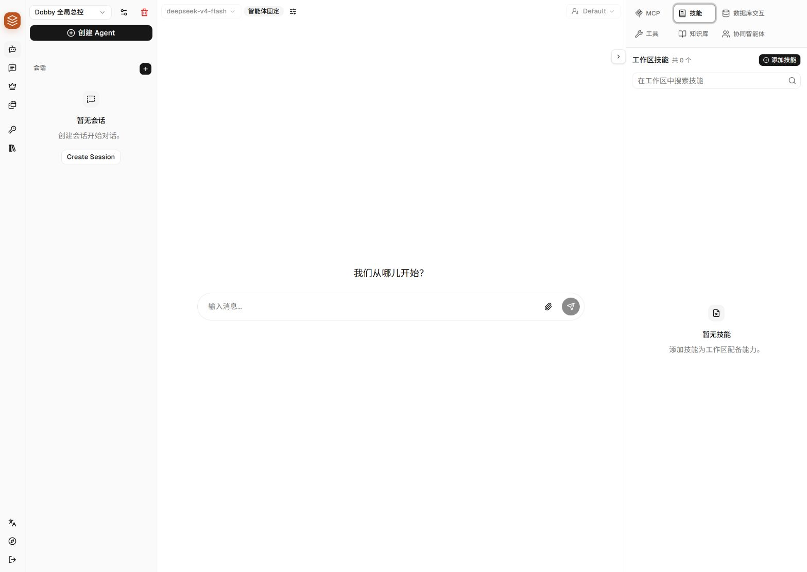
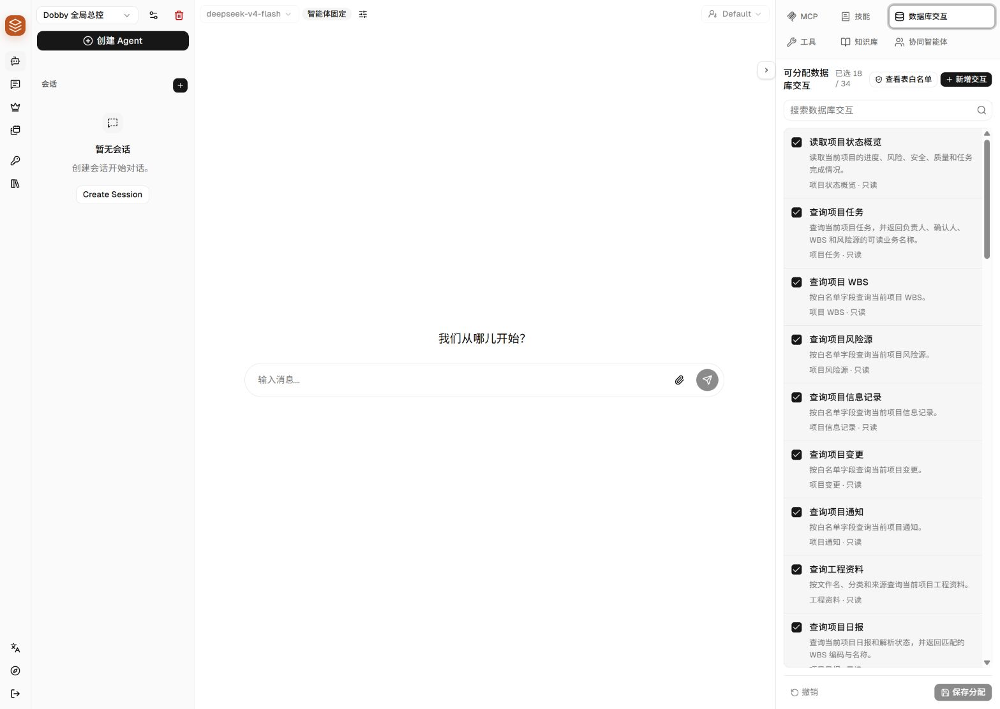
总控、初始化助手和业务智能体需要的数据库交互不同。每个智能体仅分配完成职责所需的最小集合，写操作须逐项确认。
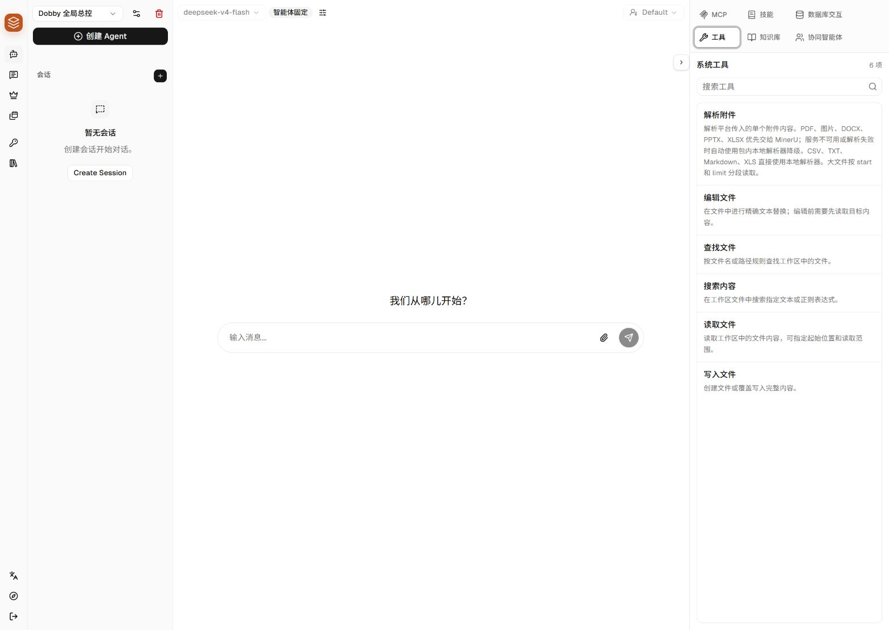
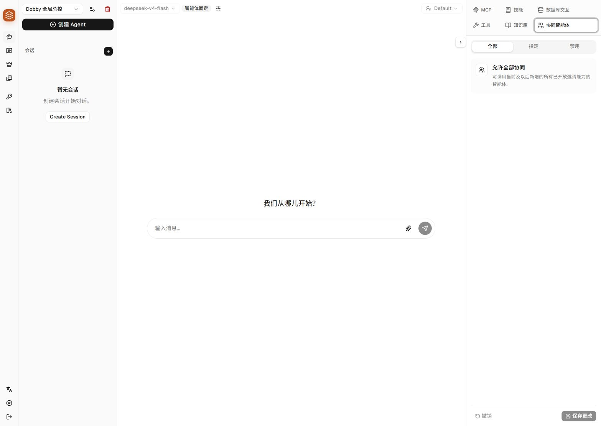
Database tutorial
数据库交互不是 SQL 编辑器，而是基于表白名单、字段范围和操作类型创建的可分配数据能力。
平台统一决定哪些表、字段和操作可以开放，以及只能访问当前项目、当前用户还是全局数据。
从白名单中选择主表、查询或写入方式、可选关联表和运行边界，形成一项中文可读的能力。
把已经创建的交互勾选给需要它的智能体。未分配的智能体即使知道技术标识也不能调用。
调用时平台再次核对会话、用户、项目、智能体、权限和字段范围，然后才执行结构化操作。
白名单是平台级安全边界，在智能体管理端只能查看；数据库交互是基于白名单创建的具体能力，可以新增、编辑、删除并分配给智能体。一个白名单可以创建多项不同交互。
左侧切换到准备使用数据库能力的智能体，再打开右侧“数据库交互”。只读智能体不会显示新增或编辑能力。
确认目标表已存在，并检查允许操作、可读字段、可写字段、可筛选字段、数据范围和最低角色。该页面仅用于查看，不能临时扩大权限。
在创建交互前，明确“目标主表、筛选条件、返回或修改字段，以及是否需要关联表字段”。需求范围不明确时，应先完成业务规则梳理。
该状态通常表示平台尚未配置数据表白名单，或当前智能体不可编辑。白名单缺失时，由平台维护人员开放目标表；交互配置不能绕过白名单。
目标：让智能体查询当前项目的任务，并把任务负责人从内部 ID 转换为可读的姓名和账号。
预期调用：用户问“本周有哪些未完成任务，负责人是谁？”时，智能体调用该交互并获得任务信息与负责人名称。
在“数据库交互”标签点击“新增交互”。弹窗左侧目录可以快速跳到基本信息、数据来源、运行边界、关联表、调用参数和运行设置。
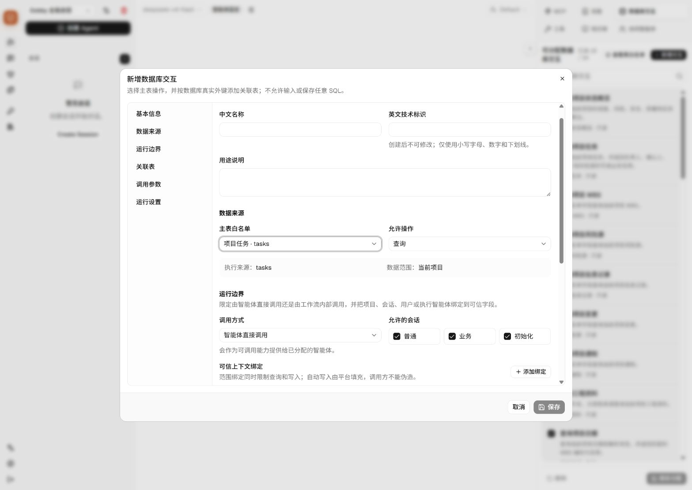
| 字段 | 示例 | 判断标准 |
|---|---|---|
| 中文名称 | 查询项目任务与负责人 | 名称应以动作开头，让不懂技术的人一眼知道用途。 |
| 英文技术标识 | query_project_tasks_with_owner | 仅小写字母、数字和下划线，以字母开头；创建后不能修改。 |
| 用途说明 | 查询当前项目任务，并返回负责人姓名、账号、状态和截止时间。 | 说明应包含使用时机、返回内容和不能做什么；模型会用它判断何时调用。 |
tasks 和“当前项目”。这意味着平台会自动隔离项目，不需要模型传入项目 ID。项目 ID、用户 ID 和会话 ID 不由模型自由填写。平台根据当前会话识别真实范围，伪造或越权的记录会在执行前被拒绝。
| 项目 | 本示例选择 | 含义 |
|---|---|---|
| 调用方式 | 智能体直接调用 | 保存并分配后，这项能力会直接出现在智能体可调用工具中。 |
| 允许的会话 | 普通、业务 | 仅在勾选的会话类型中装载。是否允许写入仍受平台实际权限约束。 |
| 可信上下文绑定 | 无需额外添加 | 主表白名单已经按当前项目隔离。只有还要按当前会话、用户或执行智能体进一步隔离时才添加。 |
可信上下文绑定选择规则：
点击“添加关联表”。系统只会提供与当前查询路径存在真实数据库外键、并且已经加入白名单的表。本示例自动找到：
main.assignee_user_id → users.id
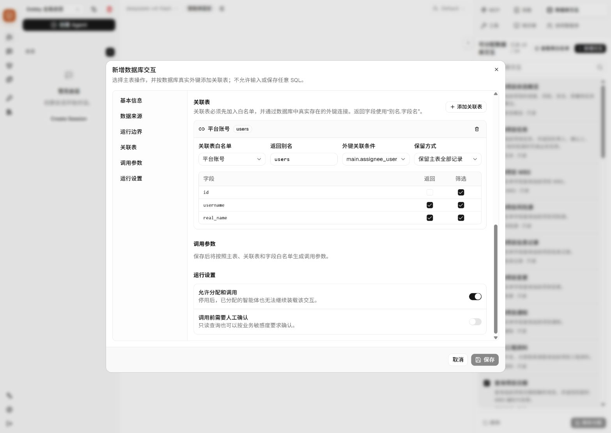
| 字段 | 本示例 | 说明 |
|---|---|---|
| 关联表白名单 | 平台账号 | 目标表必须已经加入平台白名单。 |
| 返回别名 | users | 结果字段会以 users.real_name 形式出现；别名不能使用 main。 |
| 外键关联条件 | main.assignee_user_id → users.id | 只能选择数据库真实存在的外键，不允许手写任意连接条件。 |
| 保留方式 | 保留主表全部记录 | 即 LEFT JOIN；负责人缺失时任务仍返回。选择“只保留匹配记录”会过滤无负责人任务。 |
| 返回字段 | username、real_name | 只勾选智能体真正需要看到的字段。 |
| 筛选字段 | 按业务需要勾选 | 勾选后模型才能使用该字段做精确筛选或排序。 |
新增、修改和删除永远只作用于主表，不能在一项写交互中同时修改多张表。需要多步写入时，应拆成多项交互并由智能体或 MCP 工作流按顺序调用。
保存后，平台会根据主表、字段白名单、操作类型和关联表自动生成参数，不需要手写 JSON Schema。
| 操作 | 常见参数 | 使用规则 |
|---|---|---|
| 查询 | keyword、filters、fields、order_by、offset、limit | 只能使用白名单允许返回、筛选和排序的字段；一次最多返回 200 条。 |
| 按 ID 查询 | record_id 或 record_ids | 两者不能同时使用；批量 ID 有数量上限。 |
| 新增 | values | 只能传可写字段；项目、用户、会话等绑定字段由平台补充。 |
| 修改 | record_id、values、可选 expected | 建议先读后改；expected 可防止覆盖别人刚刚修改的数据。 |
| 删除 | record_id | 只能删除当前授权范围内的单条记录。 |
打开“允许分配和调用”。只读敏感数据可额外要求确认；智能体直接调用的写操作固定需要权限审核，不能关闭。
新建交互会进入全平台目录，但不会自动分配给当前智能体。找到它，勾选复选框并点击“保存分配”。
发送“列出当前项目未完成任务及负责人姓名”。观察是否调用正确交互、是否只返回当前项目数据。
如果返回字段过多，编辑交互减少字段；如果智能体无需该能力，取消勾选而不是只在提示词中禁止。
MCP + Database
MCP 不得获得数据库账号、文件路径或任意 SQL 权限。MCP 访问业务数据时统一通过平台数据库交互网关，并受能力分配、会话范围和白名单约束。
适用于常规管理配置和普通 MCP。
适合大量分页、循环处理或需要封装成单个工具的流程。
“智能体直接调用”和“MCP / 工作流内部调用”不能同时生效。需要同时提供两种入口时，应基于同一白名单创建两项不同技术标识的交互，并分别控制分配。
方式 A 配置简单且调用过程完整可见。以下示例假设平台已上传“数据分析与预测建模”MCP：
创建或复用“查询项目任务与负责人”，调用方式选择“智能体直接调用”，并分配给数据分析智能体。
切换到 MCP 标签，勾选“数据分析与预测建模”，点击“保存分配”。确认详情中能看到需要的分析工具。
分析结果需要入库时，应单独创建仅开放必要字段的写交互。MCP 和智能体不得绕过交互直接更新数据表。
在智能体说明中配置“先读取数据，再调用 MCP 分析；只有用户确认且存在已分配写交互时才写回”。该顺序由智能体在运行时执行。
让智能体分析当前项目任务延期风险。时间线应依次显示数据库查询、MCP 调用和可选写回确认，MCP 不直接连接数据库。
当任务需要分析平台数据时，先调用已分配的只读数据库交互获取必要字段，再把结构化结果交给数据分析 MCP。数据量较大时使用分页或 MCP 内部工作流，避免将整张表复制进提示词。需要写回时必须调用独立写交互并经过权限确认。
| 场景 | 建议 | 原因 |
|---|---|---|
| 几十条以内、步骤需要用户看见 | 方式 A | 调试简单，数据库查询和 MCP 调用都在会话时间线可见。 |
| 需要连续分页读取数千条记录 | 方式 B | MCP 可以在内部循环读取，避免把大量数据反复写入模型上下文。 |
| 同一 MCP 工具内部要读、计算、再读 | 方式 B | 封装后单次调用更稳定，也不会产生很长的邀请或工具参数。 |
| 业务人员临时组合多个能力 | 方式 A | 无需改 MCP 包，只需要调整智能体分配与说明。 |
| 需要原子性地修改多张表 | 设计专用工作流 | 当前交互写操作只允许单表；多表写入需要受控工作流和回滚策略。 |
MCP 包的 mcp.json 需要声明受控平台能力：
{
"schema_version": 1,
"name": "project-analysis",
"display_name": "项目数据分析",
"version": "1.0.0",
"transport": "stdio",
"command": "runtime/python.exe",
"args": ["server.py"],
"platform_capabilities": ["dobby_database_interactions"]
}运行时由平台向 MCP 子进程注入以下信息，上传包内不得写入固定值：
| 环境变量 | 用途 |
|---|---|
DOBBY_DATABASE_INTERACTION_BASE_URL | 受控数据库交互接口地址。 |
DOBBY_AGENT_TOOL_TOKEN | 专用网关令牌，只在服务器 MCP 进程内存在。 |
DOBBY_PLATFORM_SESSION_ID | 真实工程平台会话，用于反查当前用户和项目。 |
DOBBY_PLATFORM_AGENT_ID | 平台会话所属主智能体。 |
AGENTSCOPE_AGENT_ID | 实际执行该 MCP 的智能体，用于核对交互分配。 |
请求必须携带专用令牌，并使用已分配交互的技术标识。下面是协议示意，包开发者可用任意 HTTP 客户端实现：
POST {DOBBY_DATABASE_INTERACTION_BASE_URL}/execute
Authorization: Bearer {DOBBY_AGENT_TOOL_TOKEN}
Content-Type: application/json
{
"agentscope_session_id": "{DOBBY_PLATFORM_SESSION_ID}",
"actor_agent_id": "{AGENTSCOPE_AGENT_ID}",
"platform_agent_id": "{DOBBY_PLATFORM_AGENT_ID}",
"interaction_key": "query_project_tasks_for_analysis",
"access_mode": "workflow",
"arguments": {
"fields": ["title", "status", "users.real_name"],
"filters": {"status": "pending"},
"offset": 0,
"limit": 100
}
}MCP 不得接收数据库文件路径、账号、连接字符串或原始 SQL。平台会拒绝未分配交互、错误调用方式、越权项目、未授权字段和未开放的写操作，MCP 不能绕过这些边界。
Project initialization
项目初始化不是由一个 MCP 包独立完成。它是一条受平台控制的流水线：固定附件解析工具负责读文件，初始化技能负责组织工作，专项智能体通过数据库交互写草稿，核验 MCP 只负责最后核验。
附件解析由平台固定工具执行，流程组织由初始化编排技能负责，草稿读取与写入通过数据库交互完成，最终检查由核验 MCP 执行。核验 MCP 不属于智能体可分配能力，其当前使用版本在“平台设置”中统一选择。
| 环节 | 实现方式 | 负责内容 | 配置位置 |
|---|---|---|---|
| 附件解析 | 平台固定工具 | 附件进入模型前先解析；PDF、图片、DOCX、PPTX、XLSX 优先使用 MinerU，失败后使用本地解析；CSV、TXT、Markdown、XLS 直接本地解析。 | 在“工具”标签中查看。它是全局固定能力，不能勾选、取消或编辑。 |
| 流程编排 | 初始化技能 | 先创建执行计划，再创建草稿、读取附件分块、邀请相关专项智能体、检查分区完成状态并提交核验。 | 主智能体的“技能”标签，分配 orchestrate-project-initialization。 |
| 专项整理 | 专项智能体 + 技能 | 分别整理工程信息、人员岗位、WBS 进度、风险源和质量指标；专项智能体只处理自己的分区。 | 主智能体“协同智能体”标签，以及各专项智能体的“技能”标签。 |
| 草稿读写 | 数据库交互 | 读取附件分块、创建草稿、写入各分区、检查分区状态和提交核验。智能体不直接连接数据库。 | 每个初始化智能体的“数据库交互”标签，按职责分配最小集合。 |
| 最终核验 | 必需的核验 MCP | 读取平台组装好的规范化草稿 JSON，快速执行跨分区规则，返回 ready / invalid 和定位到数据行、字段的问题。 | “平台设置 → 项目初始化智能体 → 核验 MCP”，选择当前使用版本。 |
| 核对与正式入库 | 平台固定界面 | 把问题标签展示到准确的数据行和字段；用户核对并确认后，才把草稿写入正式项目表。 | 工程管理平台的初始化草稿核对弹窗，无需在管理中心分配。 |
用户上传后应立即看到已接收反馈和解析状态。原附件保留用于下载与审计，解析结果按文件和分块保存为临时数据；附件内容不会整段写入模型提示词。
附件解析预处理结束后，模型的第一个业务动作必须是 TaskCreate。随后主智能体读取初始化状态和附件分块，创建本轮初始化草稿。
主智能体根据资料内容邀请本轮需要的专家。邀请参数传递 draft_id、文件 ID 和分块 ID，不传递大段解析文本；专家通过数据库交互分页读取所需分块。
每位专家使用对应技能理解资料，并通过已分配的数据库交互创建或更新对应分区。专项智能体不能写入其他专家分区，也不能直接写入正式业务表。
主智能体确认所需分区均已完成后，调用 dobby_finalize_project_initialization_draft(record_id=draft_id)。该调用只提交草稿 ID，不把整份草稿重新交给模型。
平台通过数据库交互读取并组装规范化草稿 JSON，然后启动“平台设置”中选定版本的核验 MCP。MCP 返回状态以及问题所在的数据记录 ID、字段、说明和处理建议；平台负责持久化结果。
前端在具体行的“核验”列展示问题标签。用户查看问题与建议、修正或确认后，平台才把草稿原子写入正式项目数据。草稿结构规范不代表业务内容已自动确认，人工确认仍为必需步骤。
| 智能体 | 技能 | 主要数据库交互职责 |
|---|---|---|
| Dobby 项目初始化助手 | orchestrate-project-initialization | 读取状态、草稿、分区和附件分块；创建草稿；全部分区完成后提交草稿核验。 |
| 工程信息专家 | extract-project-basics | 读取附件分块，创建或更新工程信息分区。 |
| 人员与岗位专家 | organize-project-personnel | 读取附件分块，创建或更新人员与岗位分区。 |
| WBS 与进度专家 | validate-wbs-timeline | 读取附件分块，创建或更新 WBS 与进度分区。 |
| 风险源专家 | extract-project-risks | 读取附件分块，创建或更新风险源分区。 |
| 质量指标专家 | map-quality-requirements | 读取附件分块，创建或更新质量指标分区。 |
各智能体看到的可分配目录可以相同，但实际分配必须按职责区分。主智能体负责创建草稿和提交核验；专项智能体仅创建或更新自己的业务分区。知识库不属于固定初始化步骤，仅在任务需要长期资料时分配。
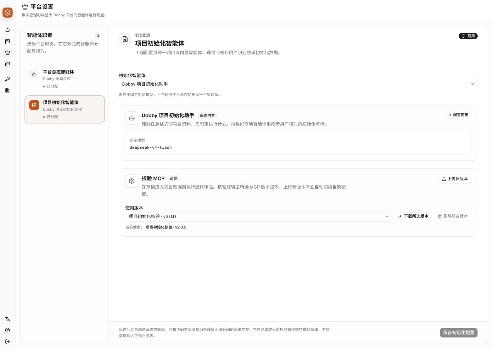
点击“上传新版本”，上传包含运行时和全部依赖的平台适配 ZIP 包。包名可以保持一致，但 mcp.json 中的版本号必须递增。
上传不会自动切换。打开“使用版本”下拉框选择目标版本，再点击页面底部“保存初始化配置”。之后新触发的核验使用该版本。
点击“下载所选版本”可取得当前包作为修改基线。修改规则、提升版本号、重新构建后，再作为新版本上传。
在下拉框选择未使用的历史版本后删除。当前正在使用的版本不能删除，必须先切换并保存其他版本。
平台负责数据权限与结果持久化，MCP 仅运行核验规则。
核验 MCP 不具备查找或修改业务数据库的权限。
核验 MCP 的输入与输出边界固定，规则可以持续升级：
平台输入：{
"draft_id": "草稿记录 ID",
"project": {...},
"personnel": [...],
"wbs": [...],
"risks": [...],
"quality_requirements": [...]
}
MCP 输出：{
"status": "ready 或 invalid",
"issues": [{
"record_id": "草稿中具体数据的记录 ID",
"field": "具体字段名",
"label": "问题中文标题",
"detail": "问题详细说明",
"suggestion": "处理建议"
}]
}在仓库根目录使用项目内嵌 Python。日常管理员通过页面上传即可，不需要执行这些命令。
.\python-3.13.14\python.exe .\scripts\build_project_initialization_validator_mcp_package.py
.\python-3.13.14\python.exe .\scripts\smoke_test_project_initialization_validator_mcp_package.py
.\python-3.13.14\python.exe .\scripts\install_project_initialization_validator.py构建产物位于 data/agentscope/test-packages/project-initialization-validator-mcp-windows.zip。修改核验规则后应提升 mcp-packages/project-initialization-validator/mcp.json 中的版本号。
Step 4
配置保存后必须经过会话验证。除确认列表显示“已选”外，还应验证能力已实际调用并返回正确结果。
请列出你当前可使用的能力，并分别说明什么情况下会使用。
请用已分配的数据能力读取一个只读概览，不要执行写操作。
请把任务拆成计划，并邀请最合适的协同智能体完成其中一项。
计划在创建和执行时直接插入聊天时间线，以便与触发消息保持上下文。完成后从底部活动区域移除，历史过程保留在时间线中。
Knowledge
知识库适合长期复用的资料。入口位于左侧书本图标；创建完成后，再回到智能体右侧“知识库”标签分配。
使用能体现内容范围的名称，例如“公司质量制度”“项目技术规范”。
上传资料后等待解析与索引完成。索引失败的文件不会被智能体可靠检索。
返回对话页，选择智能体，在“知识库”标签中勾选并保存。
询问资料中有明确答案的问题，并让智能体说明依据；避免只测试宽泛问答。
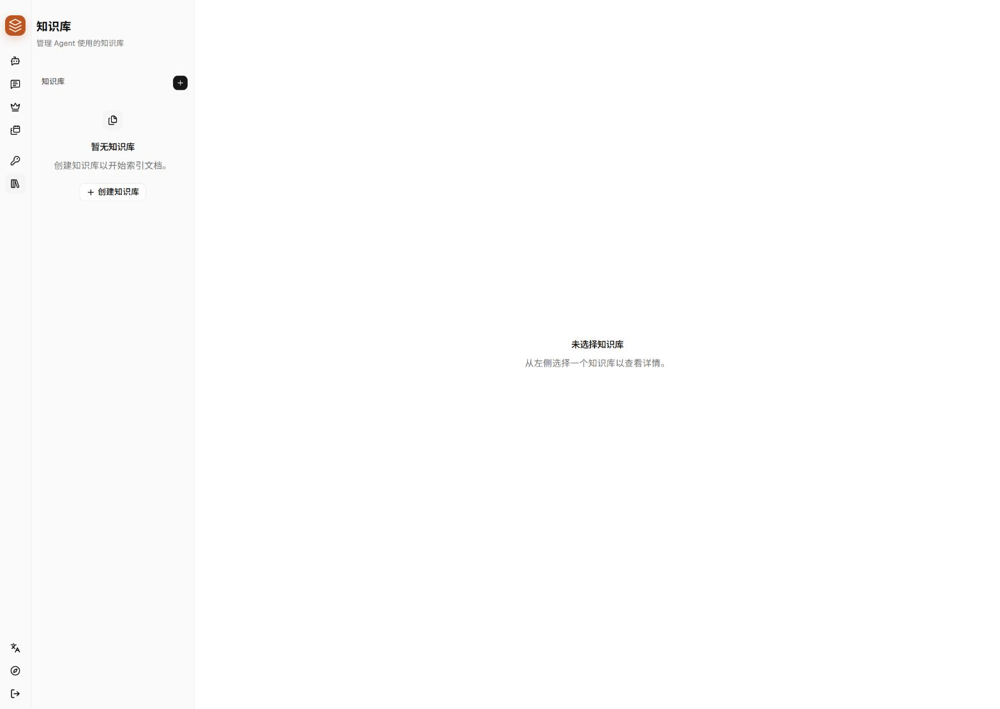
Platform settings
平台设置影响整个 Dobby，不是单个会话。入口位于左侧皇冠图标，仅管理员应修改。
| 职责 | 作用 | 配置要求 | 修改后的影响 |
|---|---|---|---|
| 平台总控智能体 | 统一承接普通对话、理解意图并组织协同。 | 已启用、可编辑、固定对话模型；不能与初始化智能体相同。 | 立即影响平台新请求；原总控恢复为业务智能体。 |
| 项目初始化智能体 | 工程配置页统一入口，处理计划、专项协同和草稿；附件解析由平台固定工具预先完成。 | 固定模型；分配初始化编排技能、职责内数据库交互和五位专项智能体，不分配旧编排 MCP。 | 影响新的项目初始化流程。 |
| 核验 MCP | 草稿入正式项目数据前执行最终结构与业务核验。 | 必须选择一个可用版本。 | 保存后新核验使用所选版本。 |
上传新版本不会自动切换。上传后应在下拉框选择目标版本并保存；当前正在使用的版本不能直接删除。需要修改规则时，先下载当前版本作为基线，再上传新版本验证。
首次配置或排查完整流程时，请同时参阅“项目初始化：MCP、技能和数据库交互如何配合”。版本选择仅代表核验能力配置，不代表整条初始化流水线已完成配置。
Audit
审计页只读，用于定位“谁、在哪个项目、哪个会话、调用了什么”。不会修改用户会话。
下拉项显示用户名称和账号，先确定具体使用者。
项目选择框会在用户选定后启用；一名用户可能属于多个项目。
查看完整消息、工具调用、时间和状态。审计页不提供编辑或重放。
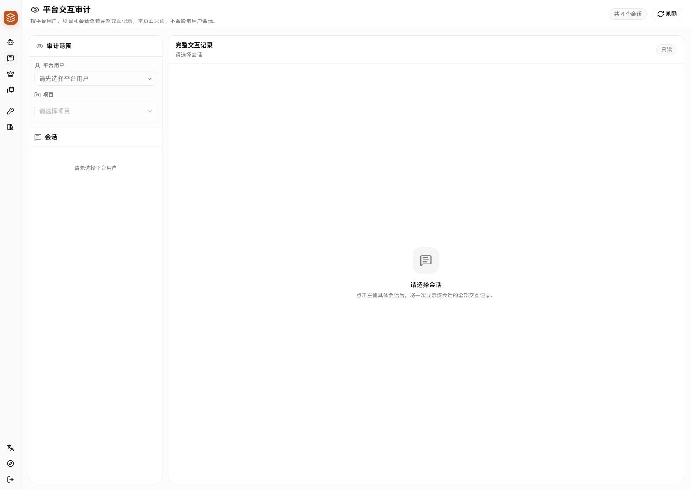
Schedule
日程页提供日历与列表两种视图，适合查看智能体产生或关联的计划安排。
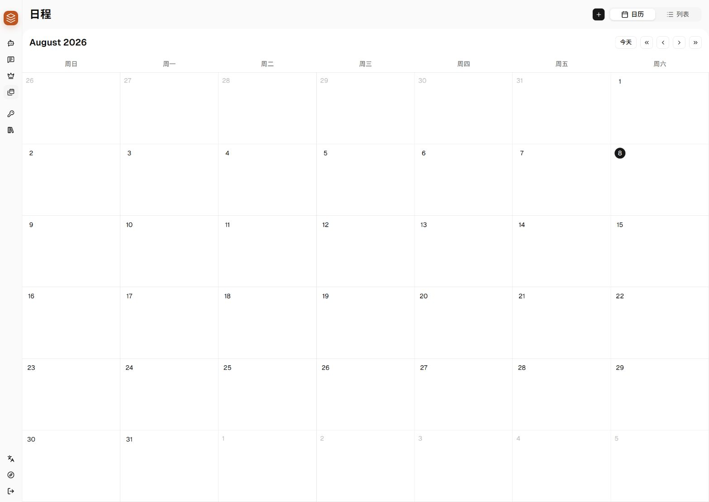
Troubleshooting
根据实际现象按顺序检查，每次只调整一项相关配置，以便确认问题原因。
通常是管理中心后端或 AgentScope 服务未启动，或请求地址不可达。确认服务状态后重新上传；该提示不属于包内容校验错误。
可分配目录应保持一致，但每个智能体的勾选结果可以不同。目录缺项时，刷新页面并检查平台数据库交互服务；已选数量不同符合按职责实施最小权限分配的规则。
主表到目标表之间必须存在数据库真实外键，而且两张表都已加入白名单。仅仅字段名称相同不能建立关联；请让数据库维护人员补充外键或调整数据模型。
dobby_database_interactions，或没有使用平台注入的专用令牌。TaskCreate。orchestrate-project-initialization 技能。该现象通常由邀请消息携带附件解析全文引起。邀请参数应只包含草稿 ID、文件 ID 和分块 ID，由专项智能体通过数据库交互分页读取。请检查初始化编排技能和附件分块交互的分配情况。
该状态通常表示当前没有变更，或必填项未完成。产生有效修改后若按钮仍为灰色，请检查名称、模型、邀请说明和必选的核验版本。
Go live